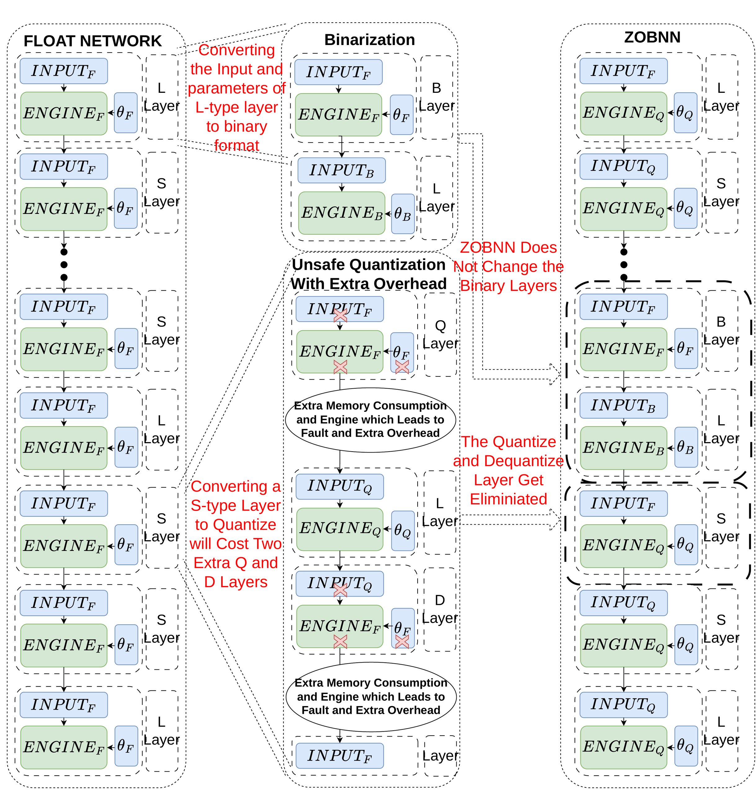

Binary networks still contain vulnerable floating-point parameters.
Binary neural networks reduce memory and computation by binarizing weights and activations, but practical architectures retain selected floating-point parameters to preserve accuracy. Experimental fault analysis showed that deviations in those remaining parameters can make the network highly sensitive to memory faults.
Improve dependability without changing the binary layers.
ZOBNN deliberately restricts and uniformly quantizes selected floating-point parameters. The design preserves the existing binary layers while avoiding the extra quantize and dequantize operations that a conventional conversion can introduce.
- Analyzed how memory faults affect binary networks and their remaining floating-point parameters.
- Reduced exposure by constraining those parameters to a deliberately quantized representation.
- Preserved the original binary computation path instead of adding new inference stages.
- Evaluated the resulting architecture with extensive experimental fault simulation.
More robust inference with no added computation.
The reported experiments show a fivefold robustness improvement over a conventional floating-point DNN, without additional computational overhead during inference. The work was published at the 30th IEEE International Symposium on On-Line Testing and Robust System Design in 2024.